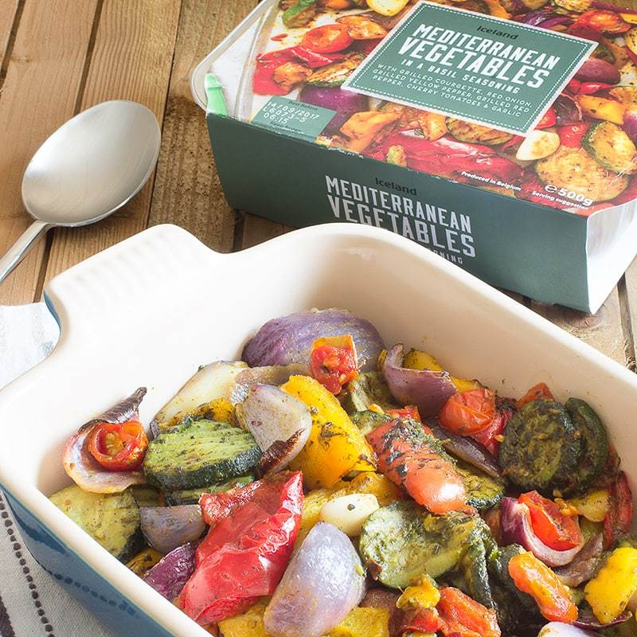
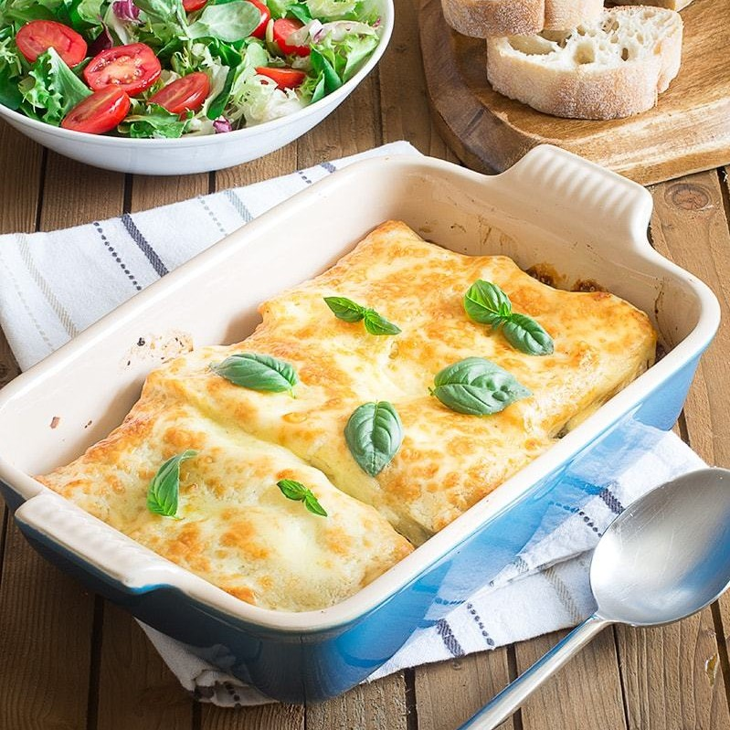

1. Pre-heat your over to 200ºC/180ºC fan.
Put you Mediterranean vegetables into a large baking tray and cook according to the pack instructions.
While the vegetables are cooking, if you’re using dried pasta, fill a large shallow dish with boiling water and place your 6 lasagne sheets into it to soak for 5 minutes.
Once your vegetables have cooked and lasagne sheet softened, turn your oven up to 220ºC/200ºC fan

2. Spread your soft cheese (100g) onto the lasagne sheets.
Spoon half of your vegetables into a large, rectangular baking dish. Pour over half of the passata (200ml). Lay 3 lasagne sheets on top (soft cheese side up). Spoon over the remaining vegetables and pour in over the remaining pasta (200ml). Lay three more lasagne sheets on top (soft cheese side up again), and then finish everything off by laying the sliced cheese over the top.

3. Bake for 20-25 minutes until the cheese is golden.
Remove from the oven and serve.
4. Serve with a sprinkle of sesame seeds and the chopped green ends of the spring onion.